تجمع الأسد I المجري هو مجموعة مجرات مشهورة جدًا لأنها تحتوي على العديد من المجرات اللامعة. على اليمين توجد مجموعة فرعية M96 وعلى اليسار توجد مجموعة فرعية M66، وترتبطان ببعضهما عبر المجرة NGC 3489 التي تقع بينهما.
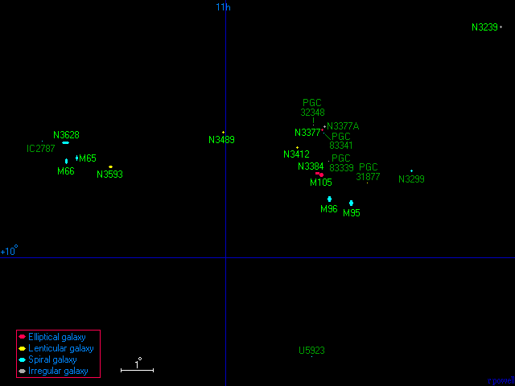
أدناه - ثلاث مجرات لامعة في المجموعة الفرعية M96. M95 (على اليمين) وM96 (في الوسط) كلاهما مصنفان كمجرات حلزونية محدبة. NGC 3377 (على اليسار) هي مجرة إهليلجية لامعة.
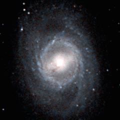 |
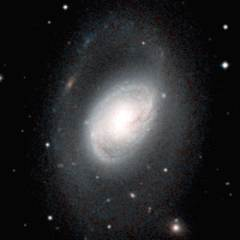 |
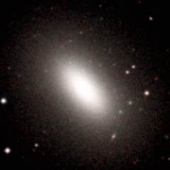 |
| M95 | M96 | NGC 3377 |
أدناه - ثلاث مجرات أخرى مرتبطة بالمجموعة الفرعية M96. M105 (على اليمين) وNGC 3384 (في الوسط) هما مجرتان إهليلجيتان لامعتان إضافيتان. NGC 3489 (على اليسار) هي مجرة عدسية (المجرات العدسية أكثر تسطحًا من المجرات الإهليلجية) وتقع بين المجموعتين الفرعيتين M96 وM66.
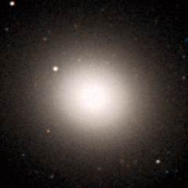 |
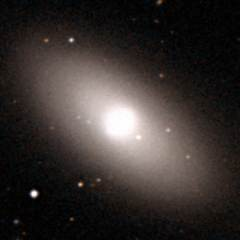 |
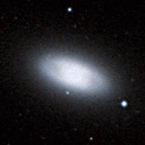 |
| M105 | NGC 3384 | NGC 3489 |
هذه قائمة بأهم المجرات في تجمع الأسد I المجري. تحتوي هذه المجموعة على اثنتي عشرة مجرة يزيد قطر كل منها عن ثلاثين ألف سنة ضوئية.
| قائمة المجرات الرئيسية | ||||||||
|---|---|---|---|---|---|---|---|---|
| الاسم | الإحداثيات الاستوائية مطلع مستقيم RA ميل Dec |
القدر الأزرق | النوع | الحجم الزاوي دقائق قوسية(′) |
الحجم (ألف سنة ضوئية) |
سرعة التقهقر (كم/ث) |
أسماء أخرى | |
| NGC 3239 | 10 25.1 | +17 10 | 11.7 | Irr | 4.5 | 45 | 1078 | |
| NGC 3299 | 10 36.4 | +12 42 | 14.1 | SBd | 1.9 | 20 | 977 | |
| PGC 31877 | 10 42.0 | +12 20 | 16.8 | S0 | 0.6 | 5 | 1116 | |
| M95 | 10 44.0 | +11 42 | 10.5 | SBb | 7.6 | 75 | 1117 | NGC 3351 |
| M96 | 10 46.8 | +11 49 | 10.1 | SBa | 7.8 | 80 | 1237 | NGC 3368 |
| PGC 83339 | 10 46.9 | +13 00 | 17.3 | Irr | 1.2 | 10 | 1171 | |
| NGC 3377A | 10 47.4 | +14 04 | 14.3 | SBm | 1.8 | 20 | 905 | UGC 5889 |
| PGC 83341 | 10 47.5 | +13 53 | 17.5 | Sc | 0.5 | 5 | 909 | |
| NGC 3377 | 10 47.7 | +13 59 | 11.1 | E | 4.4 | 45 | 1026 | |
| M105 | 10 47.8 | +12 35 | 10.2 | E | 5.1 | 50 | 1217 | NGC 3379 |
| NGC 3384 | 10 48.3 | +12 38 | 10.8 | E | 5.4 | 55 | 1066 | |
| PGC 32348 | 10 48.9 | +14 07 | 16.1 | E? | 0.8 | 10 | 973 | |
| UGC 5923 | 10 49.1 | +06 55 | 14.1 | Sa | 0.9 | 10 | 1061 | |
| NGC 3412 | 10 50.9 | +13 25 | 11.4 | S0 | 3.7 | 40 | 1191 | |
| NGC 3489 | 11 00.3 | +13 54 | 11.1 | S0 | 3.5 | 35 | 1031 | |
| NGC 3593 | 11 14.6 | +12 49 | 11.8 | S0 | 5.2 | 55 | 969 | |
| M65 | 11 18.9 | +13 06 | 10.2 | SBa | 9.1 | 95 | 1146 | NGC 3623 |
| M66 | 11 20.2 | +13 00 | 9.6 | SBb | 8.7 | 90 | 1066 | NGC 3627 |
| NGC 3628 | 11 20.3 | +13 35 | 10.3 | Sb | 12.9 | 130 | 1184 | |
| IC 2787 | 11 23.3 | +13 38 | 16.0 | Sc | 0.8 | 10 | 1081 | |
أدناه - ثلاث مجرات في المجموعة الفرعية M66. NGC 3593 (على اليمين) هي مجرة عدسية تحتوي على بعض حزم الغبار بالقرب من وسطها. M65 (في الوسط) وM66 (على اليسار) هما مجرتان حلزونيتان محدبتان لامعتان.
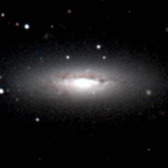 |
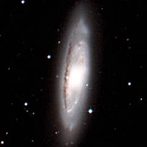 |
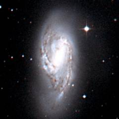 |
| NGC 3593 | M65 | M66 |
في الأسفل تظهر المجرة NGC 3628. هذه مثال رائع لمجرة حلزونية تُرى من الحافة. مثل معظم المجرات الحلزونية، فإن قرص هذه المجرة مليء بسحب غبار داكنة.
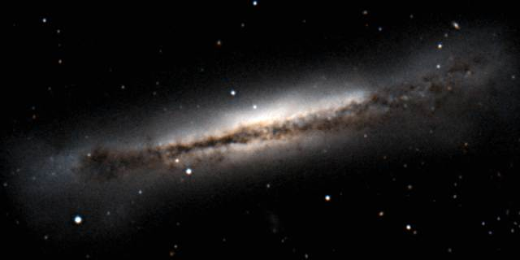
| خصائص تجمع الأسد I المجري | |
|---|---|
| الإحداثيات الاستوائية | RA=11h00m Dec=+13° |
| الإحداثيات المجرية | l=235° b=+60° |
| الإحداثيات المجرية الفائقة | L=95° B=-25° |
| المسافة إلى مركز المجموعة المجرية | 35 مليون سنة ضوئية |
| عدد المجرات الكبيرة في المجموعة | 12 |
| أسماء أخرى للتجمع | مجموعة M66/M96 |